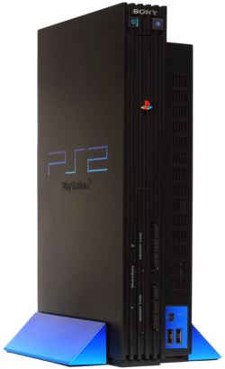
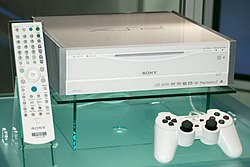

Memory Card

O Memory Card é um dos acessórios fundamentais do Playstation 2, o qual permite salvar o progresso nos diferentes jogos. A versão oficial deste dispositivo de armazenamento tem um tamanho de 8 MB, embora tendo sido vendido oficialmente de 16 MB e outras empresas tendo passado a fabricar até 128 MB de capacidade.
EyeToy

A EyeToy é um acessório inovador e interessante lançado para o PlayStation 2, que consiste numa câmera cuja função é filmar os movimentos do jogador e colocá-los na tela. Fazendo movimentos, o jogador interage com objetos na tela como se estivesse dentro do jogo. Há jogos de atividades diversas no EyeToy como brincadeiras com objetos, musicais e até jogos onde o jogador participa de uma ação de fato.
Modelos
Os modelos originais do PlayStation 2
O design original do PlayStation 2 foi baseado em um protótipo abandonado da Atari, denominado Falcon 030. A Sony, tendo gostado do desenho deste protótipo, comprou os direitos do projeto e usou em seu console.

Os primeiros modelos (SCPH-10000, SCPH-15000 e SCPH-18000) foram vendidos apenas no Japão. Estes modelos incluíam um PCMCIA em vez da porta Dev9 dos modelos posteriores. A PCMCIA-to-adaptador Dev9 foi posteriormente disponibilizada para estes modelos. Os modelos SCPH-10000 e SCPH-15000 não possuíam um reprodutor de filmes DVD incorporada e, em vez disso, tinham um software de reprodução de criptografado que foi copiado para o cartão de memória de um CD-ROM incluído (normalmente, o PS2 só executa softwares de encriptação de seu cartão de memória, mas isso pode ser mudado com o PS2 Independence Exploit).
A terceira versão do PlayStation 2 tinha uma estrutura substancialmente diferente das reedições posteriores, apresentando várias placas interligadas de circuito impresso. A partir da quarta versão, tudo foi unificado em uma placa, exceto o fornecimento de energia. Na quinta versão, foram introduzidas pequenas alterações internas, e a única diferença entre esta e a sexta versão (também denominada como versão 5.1) é a orientação do botão Liga/Desliga como conector da placa do interruptor, que foi revertida na sexta versão para impedir o uso de Modchips piratas. A sétima e a oitava versões incluíam apenas pequenas alterações em relação à sexta versão.
Todas as versões a partir da SCPH-50000 possuem uma alteração na BIOS, da qual desabilita um exploit que permitia rodar aplicativos homebrew através do Memory Card, além de acrescentar receptores infravermelhos para controles remotos de DVD, que antes eram opcionais. Essa edição removeu a norma IEEE 1394, adicionou a capacidade de ler DVD-RW e DVD+RW e acrescentou uma varredura progressiva (Progressive Scan) para produção de filmes em DVD. A décima e a décima primeira versões contaram com poucas modificações.
A cor padrão do PS2 é preto fosco. Consoles com diversas variações de cor, incluindo cinza, amarelo, azul, prata metálico, azul-marinho, preto opaco, roxo, ouro acetinado, prata acetinado, branco, vermelho, azul transparente (Blue Ocean), Pink Limited Edition e Black Piano, foram produzidos em diversas regiões
Em setembro de 2004, foi lançado o console versão 12, SCPH-70000. Lançada em novembro de 2004, é menor do que a versão antiga e inclui uma porta Ethernet. Em alguns lugares também inclui um modem. O tamanho e peso nesta edição foram reduzidos a 230mm de altura, 152mm de largura e 28mm de profundidade (ou seja, menos 32%).
Devido ao seu perfil estreito, que contém a baia de expansão de 3.5 polegadas, não dá suporte a disco rígido interno, mas devido à presença de portas USB 1.1, pode ser usado um disco rígido externo (apesar de nenhum jogo requerer um disco rígido interno) e utiliza uma fonte externa de energia, de maneira semelhante ao GameCube. Apesar das portas USB estarem disponíveis, a falta de unidade de disco rígido causou um problema, porque as portas USB 1.1 são mais lentas e poucos jogos foram feitos para usá-la. Para algumas pessoas, esta tem sido uma limitação, especialmente para aqueles que preferem jogos como Final Fantasy XI, que exige o uso de periféricos, e evita o uso do pacote oficial do PlayStation 2 Linux.
Houve discussões em relação à numeração deste modelo, uma vez que existem duas subversões do SCPH-70000. Uma delas inclui o antigo EE e GS e a outra contém a nova placa unificada EE + GS. Duas propostas de nomeação foram o nome do modelo antigo (EE e GS separados) V11.5 e o modelo V12 novo.
 O modelo V12 foi lançado em preto. A versão prata está disponível no Reino Unido, Austrália, Japão e em toda a Europa.
O modelo V12 foi lançado em preto. A versão prata está disponível no Reino Unido, Austrália, Japão e em toda a Europa.
Existe também o modelo V14 (SCPH-75001 e SCPH-75002), que contém a placa EE + GS e circuitos diferentes em comparação com as revisões anteriores, com algumas placas com direitos autorais datados de 2005, em comparação com 2000 ou 2001 e modelos mais antigos. Ele também tem uma lente diferente e alguns problemas de compatibilidade com alguns jogos.
No final de 2005 constatou-se que algumas fontes de alimentação dos modelos novos eram defeituosas e poderiam superaquecer. As unidades foram trocadas pela Sony, que forneceu um modelo de substituição. O modelo SCPH-70040 foi o que mais sofreu com este problema, apesar da Sony não ter reconhecido tal erro. Em 9 de julho de 2005, a empresa lançou o SCPH-70050, uma versão sem falhas.
PSX

A Sony fabricou também um aparelho multimídia chamado PSX, que pode ser usado como um gravador de vídeo digital e gravador de DVD, além de jogar jogos de PS2.
O aparelho foi lançado no Japão em 13 de dezembro de 2003 e, apesar de nunca ter sido lançado em qualquer outro lugar, ele pode ser encontrado à venda em algumas das lojas da Sony Style localizadas em vários países. O PSX foi mal recebido em todas as áreas do globo, devido à falta de várias características presentes nas edições originais do PlayStation 2.
Hoje, o sistema é considerado uma raridade e está à venda por cerca de 500 dólares no eBay. O PSX foi também o primeiro produto da Sony que incluiu a interface XrossMediaBar.
O modelo Slim
Outra melhoria do console, o PlayStation 2 Slim (SCPH-90000), foi lançado no Japão em 22 de novembro de 2007, e na América do Norte e Europa no final de 2008, com um redesenho e fonte interna de energia incorporados como parte do console, além de um ventilador silencioso que auxilia a manter temperatura interna, ao contrário das versões anteriores, reduzindo o peso total de 720 gramas. A série de SCPH-90000 a 90010 fabricados depois de março de 2008 incorporam uma revisão da BIOS, que corrige os problemas dos modelos anteriores.
referancia bibliografica:wikipedia/gemini